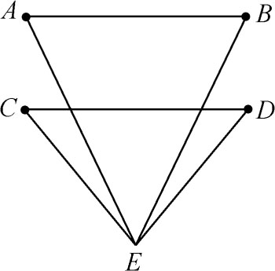
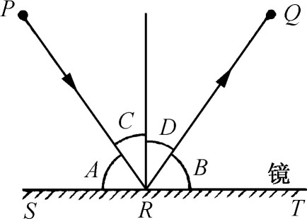

7．光学
除天文学外，数学里搞得最经久最成功的要算是光学了。光学是希腊人创立的。从毕达哥拉斯以后的几乎所有希腊哲学家都探讨过光的性质、视像和光色。但我们关心的是数学方面的成就。第一项成就是西西里岛阿格里根（Agrigentum）的恩培多克勒（约前490年）先验地提出的光以有限速度行进的说法。
光学方面的第一批系统性的著作是欧几里得的《光学》和《镜面反射》。《光学》研究视象问题以及怎样从视象确定物体的大小。欧几里得先摆出定义（其实是公设），他的第一个定义（正如柏拉图那样）说人之所以能看到东西（产生视象），乃是因为从眼睛里发出的光循直线行进照射到所见的物体上的缘故。第二个定义说视线成一锥体，其顶点在眼睛处，其底面在所见物体的最远端。定义4说两物中若一物所定视线锥的顶角较大，该物看起来就显得较大些。然后在命题8中欧几里得证明两个相等而平行的物体（图7.10中的AB和CD）的视观大小并不和它们到眼睛的距离成比例。命题23到27证明眼睛看球实际所见的不到球的一半，而所见部分的外廓是个圆。命题32到37指出看一个圆，只有当眼睛在圆平面圆心处的垂线上时，所见的才是一个圆。欧几里得又指出怎样从平面镜里所见的镜像来算出实物的大小。书里共有58个命题。

图7.10
《镜面反射》描述从平面镜、凹面镜和凸面镜反射出来的光的习性以及它对我们视觉的影响。这书也像《光学》一样是从实际上就是公设的一些定义出发的。定理1讲反射律，这是现今所谓几何光学的一个基本定律。这定理说入射线与镜面所成角A（图7.11）等于反射线与镜面所成角B。现今更普遍的说法是∠C＝∠D，而把∠C称为入射角，把∠D称为反射角。欧几里得还证明了光线照射在凸或凹镜面上的规律，他是以光线照射镜面处的切平面代替镜面来证明的。

图7.11
赫伦从反射律推出了一个重要的结论。若P及Q是在直线ST同侧的任意两点（图7.11），则从点P到直线再到点Q的一切路径中，以通过直线上点R使线段PR及QR与ST的夹角相等的那个路径为最短，而这恰好就是光线所要经过的路径。所以光线从P出发照过镜面再到Q是采取最短路程的。很明显，自然界是很了解几何，而且是运用自如的。这命题出现在赫伦的《镜面反射》一书中，那也是讲述凹镜、凸镜和复合反射镜的。
有不少著作是论述光线在各种形状镜面上的反射的。其中有阿基米德所著而现已失传的《镜面反射》（Catoptrica）以及狄奥克莱斯和阿波罗尼斯所写书名同为《论点火镜》（On Burning-Mirrors）的两部著作。点火镜肯定是呈球面形、旋转抛物面形和旋转椭球面的凹面镜，而旋转椭球面是指椭圆绕其长轴旋转而生成的形体。阿波罗尼斯肯定知道抛物镜面能把焦点处发出的光反射成平行于镜面轴的光束。反之，若照射的光线平行于轴，则反射后就聚集在焦点处。这样就可把太阳光聚集在焦点处产生高温，从而有点火镜之名。据说阿基米德就利用抛物镜面的这一性质把日光集中到罗马船上使它们起火的。阿波罗尼斯也知道其他圆锥曲线的反射性质，例如，从椭球面镜一焦点发出的光经反射后会集中到另一焦点上。他在所著《圆锥曲线》第三篇里讲述了椭圆和双曲线的有关几何性质（第4章第12节）。他以后的希腊人，特别是帕普斯，肯定是知道抛物面的聚焦性质的。
光的折射现象，即光在一个性质处处不同的媒质内通过时弯曲的现象，或光线从一个媒质进入另一媒质（例如从空气进入水）而突然改变方向的现象，曾为亚历山大时期的希腊人所研究。托勒玫注意到来自太阳和星星的光线受大气折射的影响，并打算（没有取得成功）找出光线从空气进入水或从空气进入玻璃时发生折射的规律。他所著关于镜面和折射的书《光学》（Optics）流传到今天。